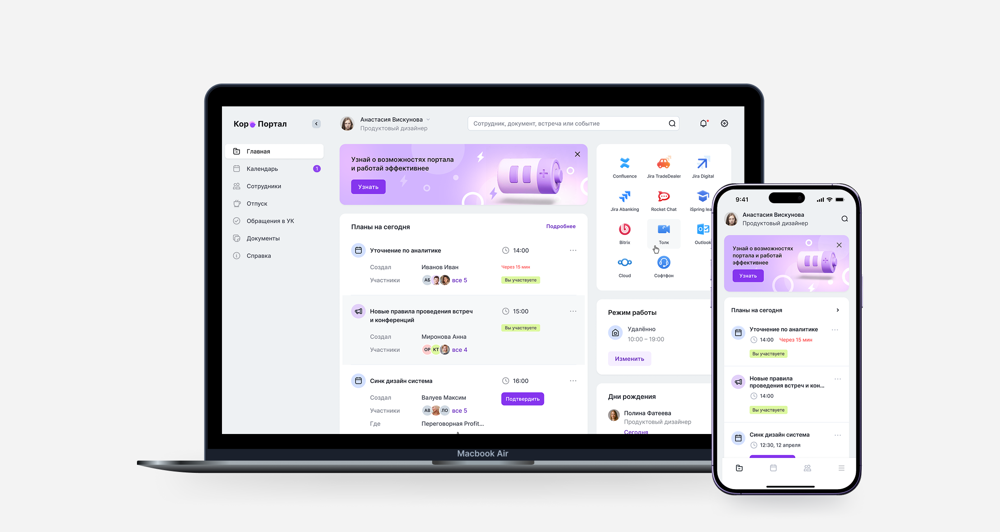
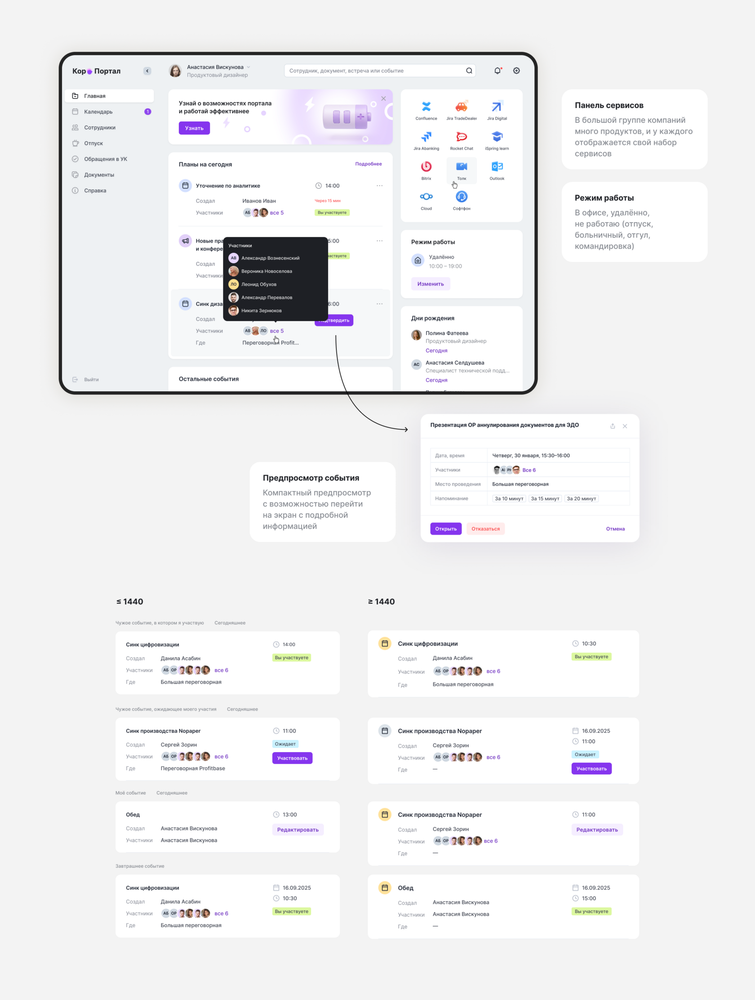
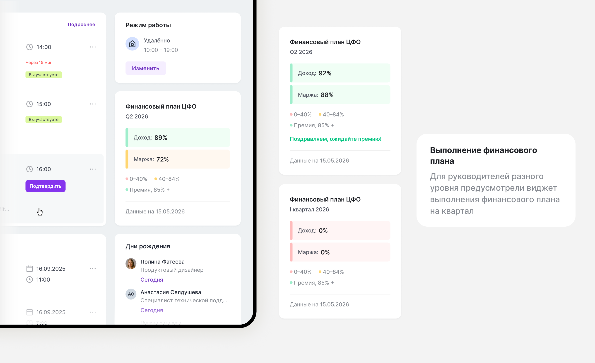
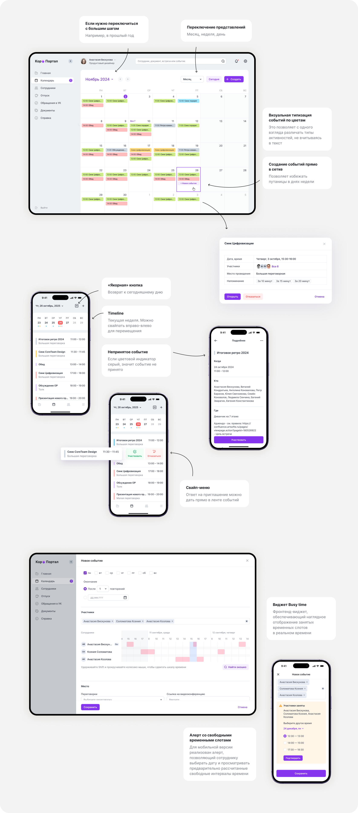
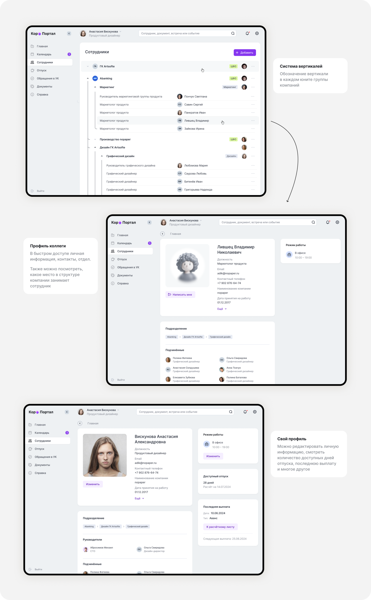
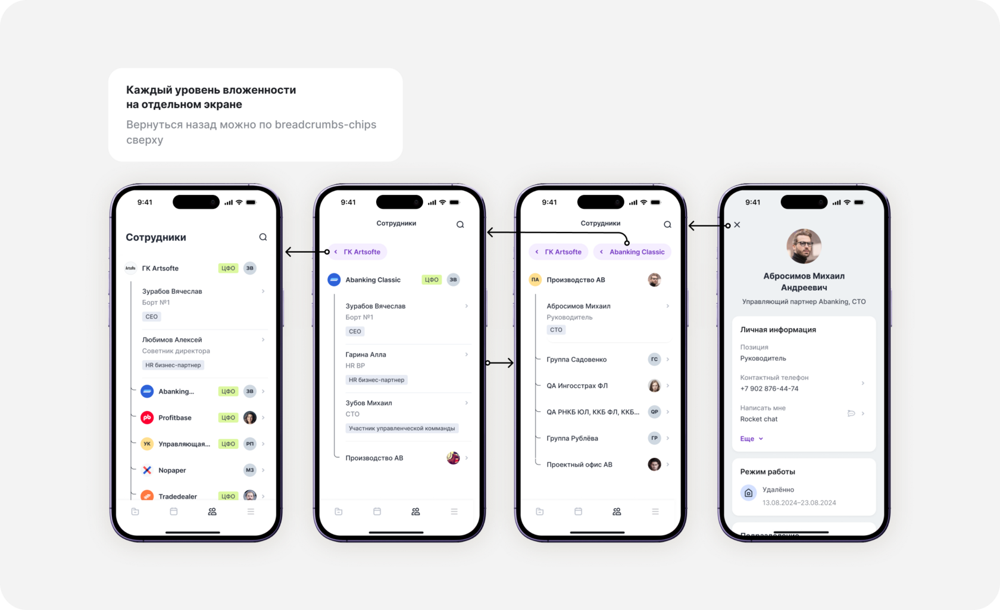
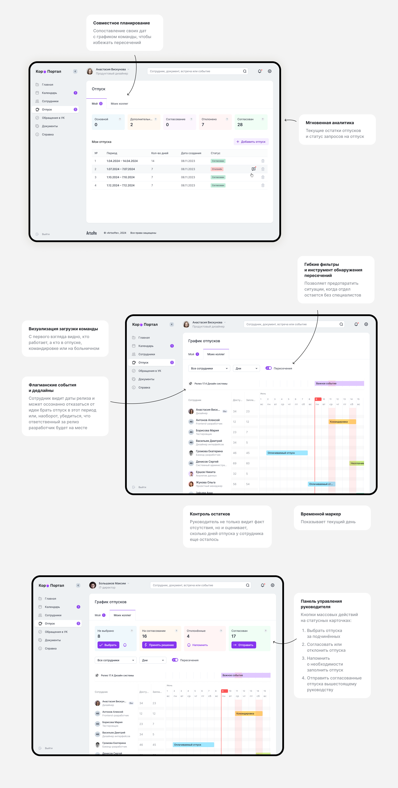
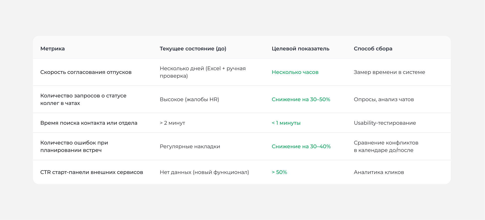
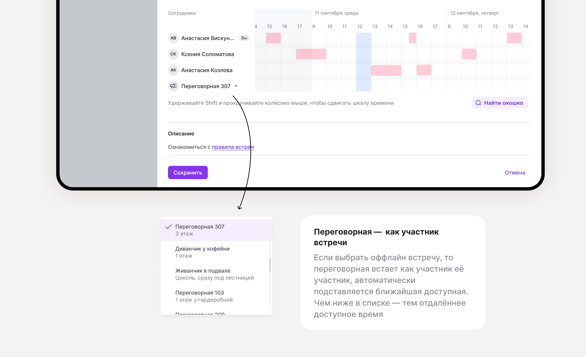
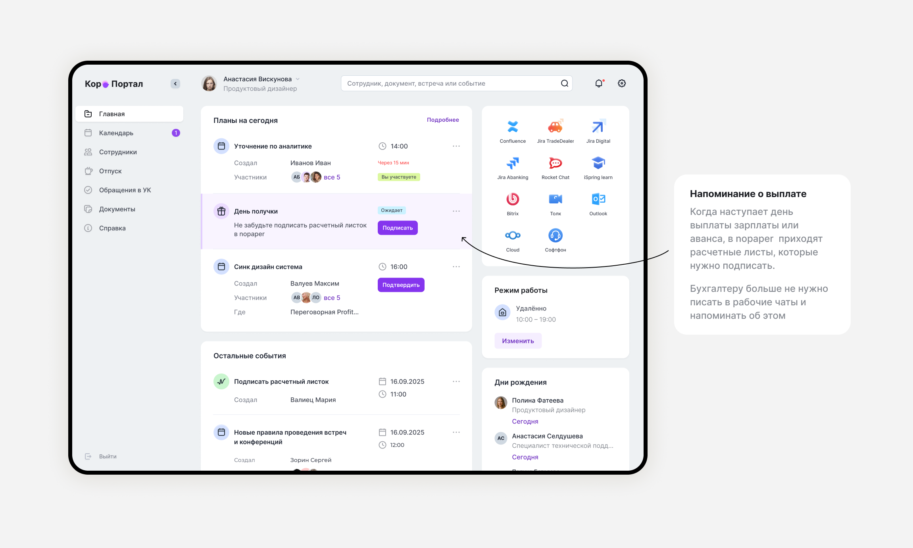

Корпоративный портал
Разработала MVP корпоративного портала на low-code платформе, который заменил громоздкий Bitrix24 и решил проблемы неактуальных данных, функциональной избыточности и несоответствия бизнес-процессам. Проект включает desktop-версию и отдельное мобильное приложение.
-
−20–30%
переходов между разделами благодаря виджету планов на главной странице
-
дни → часы
на согласование отпусков
-
−40–50%
времени на поиск контакта
Целевой эффект: продукт ещё не запущен, цифры будут сверены с реальными данными после релиза.

Контекст и проблема
На июнь 2025 года ключевые рабочие процессы группы компаний Artsofte автоматизированы в Bitrix24. Компания имеет распределённую структуру: два офиса в одном городе, часть сотрудников на удалёнке из других регионов и часовых поясов.
В конце 2024 года руководство инициировало проект по созданию нового корпоративного портала. Причина — Bitrix24 перестал отвечать потребностям бизнеса.
Критические проблемы, выявленные в интервью с IT-директором и HR BP:
- Неактуальность данных. Оргструктура в Bitrix не синхронизирована с реальными изменениями; актуальная информация хранится в Excel, чатах и других разрозненных источниках
- Сложность поддержки. Администрирование требует много ручного труда и времени
- Функциональная избыточность. Множество инструментов Bitrix не используются, но усложняют интерфейс и создают когнитивную нагрузку
- Несоответствие оргреалиям. Логика системы не отражает внутренние бизнес-процессы и структуру группы компаний
- Ручное управление отпусками. Данные об отсутствиях собирались в Excel; руководители вручную отслеживали пересечения и устраняли конфликты
Потребности бизнеса и пользователей
Бизнесу нужно:
- Заменить дорогой и перегруженный Bitrix24 на более лёгкое решение
- Синхронизировать кадровые данные с 1С автоматически, а не вести их вручную в Excel
- Снизить нагрузку на администрирование системы
- Получить портал, логика которого отражает реальные бизнес-процессы и структуру группы компаний
Пользователям нужно:
- Не тратить время на разрозненные источники — данные о коллегах и оргструктуре под рукой, а не в Excel и чатах
- Видеть план на день и статус коллег одним взглядом, не переключаясь между разделами
- Быстро согласовывать встречи и отпуска без лишней переписки и накладок в расписании
- Работать в простом интерфейсе без лишних инструментов, которые только усложняют задачу
Бизнес-метрики, на которые планируем повлиять
- Количество переходов между разделами — за счёт «зеркала дня» на главном экране (−20–30%)
- Время на поиск контакта в оргструктуре (−40–50%)
- Время на согласование отпусков — с нескольких дней до нескольких часов
- Количество запросов о статусе коллег в чатах (−80%)
- Время на согласование встреч (−30–40%)
- Количество обсуждений о занятости переговорок в чатах (−65%)
Ограничения
Технологические:
- Основной инструмент — low-code платформа. Весь интерфейс собирался из готовых контроллов конструктора
- Функционал, которого не было в конструкторе, реализовывали кастомными виджетами силами фронта
- И контроллы, и виджеты собирались на компонентах Abanking Design System (токены: цвета, типографика, отступы, состояния)
Командные:
- Я — единственный дизайнер в команде
- Проект запускался в формате MVP — без возможности долгого исследования, с фокусом на скорость
Гипотезы
Собрав все данные, мы с аналитиком сформулировали такие гипотезы. Покажу сразу на интерфейсе то, что у меня получилось.
Главный экран
- Если на главной странице отображать планы на день в виде виджета, сотрудники будут реже отвлекаться на поиск информации, переходить в календарь, искать нужный день
- Если на главной странице вывести виджет с режимом работы, сотрудники будут начинать день с этой опции, а команда будет знать статус коллег
- Если на главной отобразить виджет с персонализированными сервисами, то сотрудники будут тратить меньше времени на их поиск и не терять концентрацию

Если на главном экране появится поясняющий виджет с показателями эффективности, то это повысит прозрачность, доверие и LTV

Календарь
- Если в календаре отображать занятость каждого участника и показывать свободные окна для встреч, то сотрудники смогут быстрее согласовывать время без лишних переписок и накладок в расписании
- Если в календаре предусмотреть занятость переговорок, это снизит количество обсуждений в чатах

Сотрудники (оргструктура)
Если данные о сотрудниках и структуре синхронизируются с 1С и доступны в мобильной версии, сотрудники будут быстрее находить нужных коллег


Отпуска
Если руководитель может согласовывать отпуска через диаграмму Ганта и списки (поштучно и массово), то время на управление отсутствиями сократится, а конфликты в графиках будут исключены.


Продукт ещё не запущен — метрики, заложенные для каждой гипотезы, будут сверены с реальными данными после релиза. Рефлексия ниже — про процесс и решения, а не про итоговые цифры, которых пока не существует.
UX-тест
Делать прототип и тестировать каждый раздел было бы правильным решением, но времени на это не было. Поэтому я решила протестировать главный экран и раздел с календарём — создание и просмотр встреч это самая часто используемая функция.
Положительные моменты
- Коллеги высоко оценили виджет с событиями на день — многие начинают рабочий день с его просмотра
- Отметили удобство виджета с днями рождения коллег: сказали, что он станет дополнительным стимулом заходить на главный экран
- Сотрудники правильно воспринимали события в статусе «Ожидает» и принимали приглашения прямо с главного экрана — краткой информации в мини-модальном окне им было достаточно (посмотрим, как будет в реальной жизни)
Точки роста после тестирования
Коллегам хотелось бы видеть занятость переговорок сразу при создании события, а не перебирать варианты поштучно — чтобы система сама предлагала доступные.
Было решено убрать фичу в бэклог.

Рядовые сотрудники хотели бы видеть на главном экране дни зарплат и авансов — это повышало бы их мотивацию.
Было решено убрать фичу в бэклог.

От чего отказались
Некоторые коллеги предлагали перенести блок с режимом работы в профиль, посчитав, что он не нужен на каждый день. Но IT-директор эту идею не поддержал: такой блок дисциплинирует следить за своим рабочим временем, напоминая об этом на главном экране
Рефлексия и выводы
Этот проект научил меня одному из самых важных уроков в дизайне: ты — не пользователь
В начале проекта я предполагала, что главная боль сотрудников — неудобный интерфейс. Однако интервью с ключевыми стейкхолдерами (IT-директор, HR BP) показали другую картину: для бизнеса критичны не визуальные детали, а достоверность данных и скорость согласования.
Пример: Мы могли бы сделать красивую ленту новостей на главном экране. Но руководители сказали: «Мне не нужны новости, мне нужен Гант отпусков, чтобы видеть, кто выходит, а кто нет». Это заставило меня пересмотреть приоритеты — на главный экран попали виджеты с планами, режимом работы и старт-панелью, а не общая лента.
Удачные решения:
- Кастомная диаграмма Ганта для отпусков — наглядный пример того, как фронтенд доработка может быть точно подогнана под внутренние бизнес-процессы.
- Синхронизация с 1С в реальном времени — убрала ручное ведение данных и сделала оргструктуру всегда актуальной.
Что можно было сделать лучше:
- Провести больше пользовательских интервью с рядовыми сотрудниками на раннем этапе (не только со стейкхолдерами).
- Заложить больше времени на исследование мобильного сценария — он оказался сложнее, чем предполагалось.